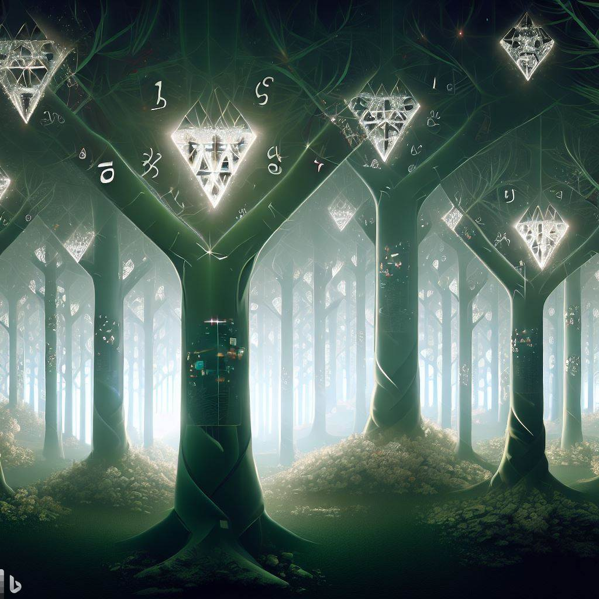

Set Theory and Me
My voyage into mathematics commenced at Pierce Community College, guided by the indelible impact of Mrs. B. Her mentorship transformed mathematical challenges into exhilarating puzzles, nurturing my curiosity and igniting the spark of self-discovery.

The decision to embrace mathematics was fueled by its meritocratic nature, offering a universal language to decipher the cosmos. For someone who once grappled with Algebra 2 in high school, this revelation was profound. Overcoming hurdles from professors, counselors, and my own doubts, the solace of music and art fueled my determination, propelling me to become a published mathematician in a world both intricate and astonishing.

This journey led me to collaborate with the esteemed set theorist John Krueger. Together, we ventured into the enigmatic landscapes of forcing and trees, navigating the complexities of Shelah's work, a luminary in the field. Unveiling principles within the mathematical universe, we uncovered the existence of counter-intuitive combinatorial trees with profound philosophical implications. While these concepts may be confined within the circles of mathematics, their allure remains irresistible.
Summary of My Paper
Titled "Some Results on Non-club Isomorphic Aronszajn Trees," my paper is a testament to the transformative power of mathematics. It unravels the construction of non-club isomorphic Aronszajn trees with strong rigidity properties. Guided by the diamond principle, I've woven a family of 2λ+ completely club rigid special λ+-Aronszajn trees. The paper also uncovers the path to generating Suslin trees with analogous attributes, extending the Abraham-Shelah result on weak diamond to higher cardinals.
Citation
Jose Chavez. John Krueger. "Some Results on Non-Club Isomorphic Aronszajn Trees." Notre Dame J. Formal Logic 63 (1) 109 - 120, February 2022. https://doi.org/10.1215/00294527-2022-0007 Beyond academia, my passion lies in fostering growth and development. I find immense joy in witnessing individuals exceed their own limits and embrace their potential. This sentiment extends to my role as an educator, where I encourage students of all ages to explore the captivating world of mathematics and research. Furthermore, I'm deeply committed to helping organizations, both large and small, develop creative business insights that can drive success in unique ways. The thrill of innovation propels me as I guide businesses through uncharted territories, leveraging unconventional approaches to unravel complexities and reveal new opportunities. Join me in navigating this website—an avenue where stories of personal transformation, the allure of mathematics, and the excitement of creative insights intertwine. Let's embark on a shared journey, embracing the lessons of the past and the boundless potential of the future!